Today we swing the Sirius posts series onto another topic : using SVG images in your designers.
Maybe you do not know yet but we will have to fight Pixels monsters this summer :
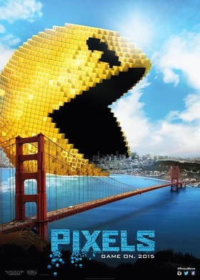
Our mission: save the world.
Our superpowered team: the SVenGers.
The story begins as any superhero blockbuster movie : a bad experiment generates a monster.
So our first step in this post is to introduce a pixel monster in the world. We define as usual a metamodel. This time, it represents our SVenGers team :
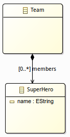
Then we provide a Sirius specification project with a new kind of representation named PixelatedDiagram and a ScalableGirl mapping.
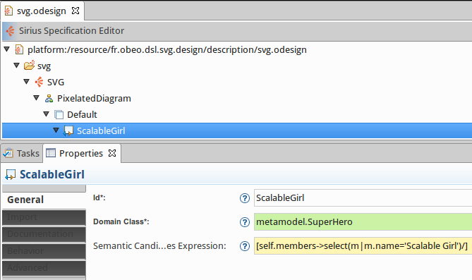
As we already saw in a previous post we use the Workspace Image style to modelize our team member.
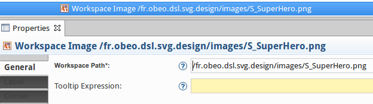
We create a new instance of our metamodel which defines the team with the SVenGers superheroes:
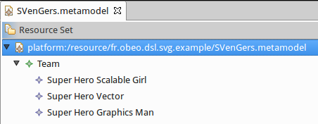
And finally, a new diagram is created :
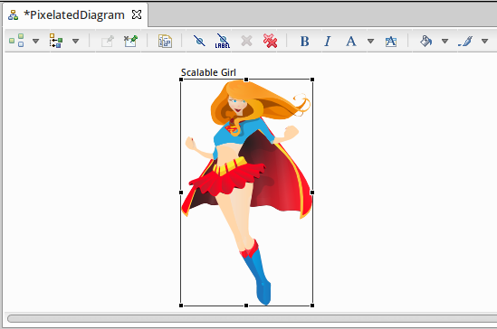
Up to there everything is fine.
But in our mapping definition we set that the node is resizable:
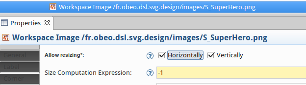
Consequently, the diagram can be updated
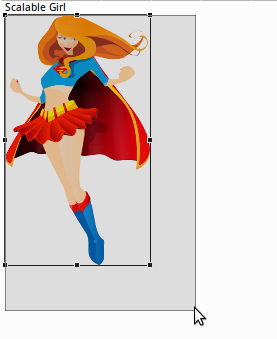
And we are able to make the Scalable girl bigger:
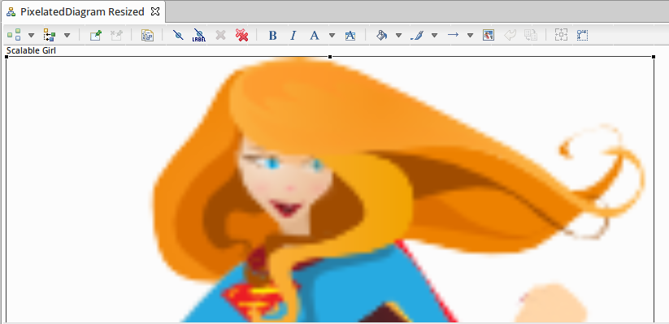
And here is the point where the pixels attack.
Thankfully, Sirius came to our rescue.
To fix this problem, Sirius supports SVG images. A Scalable girl SVG image is created thanks to an appropriate vector graphics editor like Inkscape.
As mentioned in the Sirius best practices, we need to clean the SVG file. On the <svg> container node, we must add the following attributes: viewBox="0 0 width height" and preserveAspectRatio="none".
Then when you define the mapping workspace image style instead of giving a bitmap image, you need to provide an SVG file.
To continue with our example, we create a new representation named SVGDiagram and this time, we select an SVG image for the Workspace Image style and we create two other mappings to represent the other SVenGers team members:
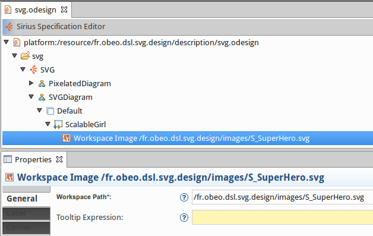
After creating a new SVGDiagram on our example model, we resize the Scalable girl again:
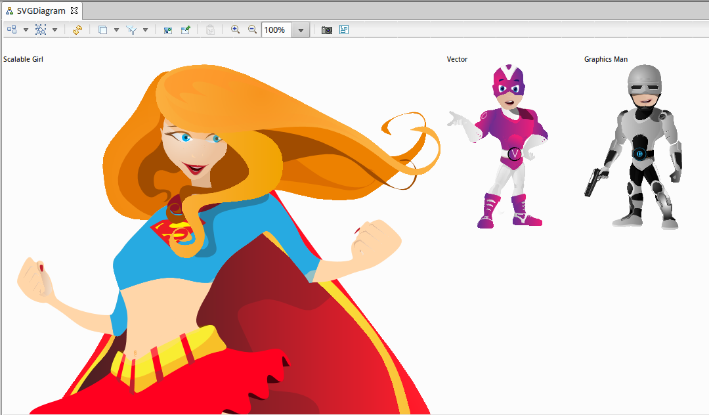
This time, she looks perfect after the resize, there is no more pixel artifact.
Caution, the current Sirius 2.0 version has a reported bug (442268) about SVG images. When you use the zoom, the SVG images quality gets as bad as if it was bitmap images. This is a known issue that should be fixed for the next 3.1 version. Do not hesitate when you find a bug to report it on the Sirius bugzilla!
By using SVG images, you are able to create designers which still look great after resize. So join us and use SVGs to fight against pixels!